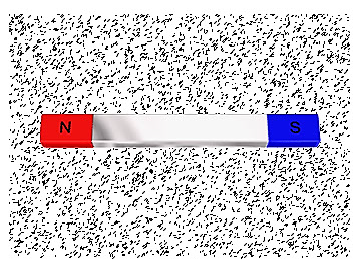
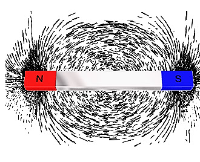

चुम्बकीय बल रेखाएँ इस प्रकार से खींची जाती है ताकि इस पर किसी बिन्दु पर खींची गई स्पर्श रेखा उस बिन्दु पर परिणामी चुम्बकीय क्षेत्र की दिशा बताती है।
चुम्बक के निकट लोहे का बुरादा ( बिना चुम्बकीय क्षेत्र के )

चुम्बक के निकट लोहे का बुरादा (चुम्बकीय क्षेत्र आरोपित करने के बाद)

Properties of magnetic field lines
चुम्बकीय बल रेखाओ के गुण:-
- बल रेखा के किसी भी बिन्दु पर खींची गई स्पर्श रेखा उस बिन्दु पर परिणामी क्षेत्र की दिशा को प्रदर्शित करती है।
- दो बल रेखा एक - दूसरे को कभी नही काटती है।
- ये चुम्बक के बाहर उत्तरी ध्रुव से दक्षिणी ध्रुव के ओर तथा चुम्बक के अन्दर दक्षिणी ध्रुव से उत्तरी ध्रुव तक जाती है अर्थात बन्द वक्र बनाती है।(Forms close loop)
- बल रेखाओं में लम्बाई की दिशा में सिकुडने का प्रयास करती है और आकर्षित करती है ।(जिससे विजातीय ध्रुवों में आकर्षण होता है)
- बल रेखाएँ एक दूसरे का किनारे से लम्बाई के लम्बवत प्रतिकर्षित करती है।(जिससे समान ध्रुवों में विकर्षण होता है) जहाँ बल रेखाओ का घनत्व अधिक (पास-पास) होता है वहाँ चुम्बकीय क्षेत्र की तीव्रता अधिक होती है।(denser means stronger)